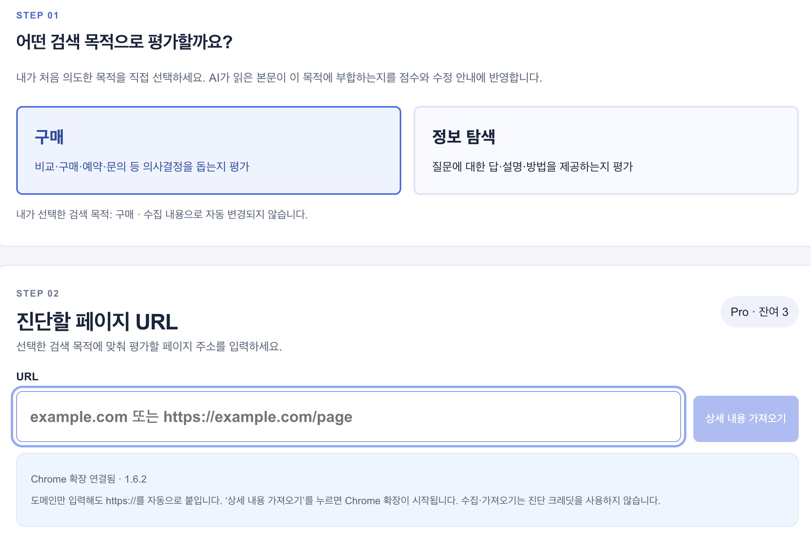
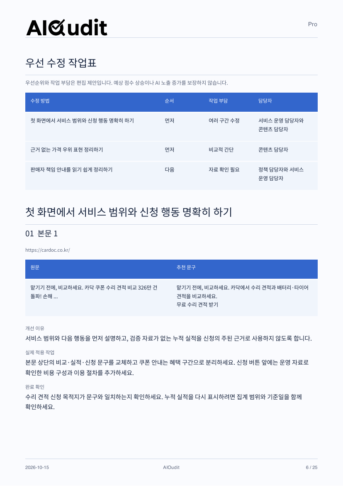
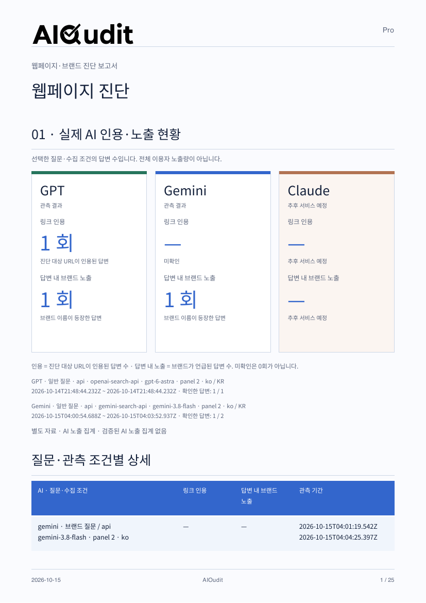

AI SEARCH · FROM INSIGHT TO ACTION
AIOudit
검색에서 발견되고,
선택받는 페이지로.
구매와 정보 탐색, 목적에 맞게 페이지를 진단합니다. AI 검색 준비도부터 실제 인용 현황, 바로 고칠 문구까지 한 흐름으로 확인하세요.
01 / 실제 진단 화면
페이지 주소보다 먼저,
검색 목적을 정합니다.
같은 페이지라도 방문자가 구매를 결정하려는지, 정보를 찾으려는지에 따라 필요한 답이 달라집니다.
- 01
구매 또는 정보 탐색 선택
처음 의도한 목적을 직접 선택합니다. 이 기준이 본문 평가와 수정 안내에 반영됩니다.
- 02
진단할 URL 입력
페이지 주소를 넣고 상세 내용을 가져옵니다. 화면에서 연결된 Chrome 확장 상태도 확인할 수 있습니다.
- 03
목적과 본문을 함께 검토
선택한 목적과 확보한 페이지 내용을 기준으로 진단하고, 결과 보고서에서 개선할 위치를 찾습니다.

실제 서비스 운영 화면 · 화면을 누르면 확대해서 볼 수 있습니다.
02—03 / 결과 확인에서 실행까지
무엇이 부족한지,
어떻게 고칠지까지.
보고서의 실제 페이지를 선택해 보세요. 점수, 관측 근거, 수정 작업이 어떻게 이어지는지 확인할 수 있습니다.
PUT IT INTO PRACTICE
원문 옆에,
바로 검토할 수정안.
진단을 읽는 데서 끝내지 않고 담당자가 실제 페이지를 고치는 작업으로 연결합니다.
- 먼저 할 일부터
- 우선 수정 작업표에서 순서, 작업 부담, 담당자를 함께 확인합니다.
- 원문과 추천 문구 비교
- 어느 구간을 어떤 표현으로 바꿀지 나란히 살펴봅니다. 샘플은 서비스 범위와 신청 행동을 더 명확하게 정리합니다.
- 적용과 완료 확인
- 개선 이유, 실제 적용 작업, 완료 확인 기준을 참고해 수정하고 검토합니다.
실제 페이지에 적용하기 전, 운영 사실과 문구를 확인하는 편집 제안입니다.
PDF 6쪽에서 보기
제공된 샘플 보고서 원본 페이지 · 확대하면 세부 내용을 읽을 수 있습니다.
READ THE DIAGNOSIS
점수보다 중요한 건,
낮은 이유와 다음 행동.
AI 검색 준비도를 의미·답변, 구조·정보, 접근·신뢰로 나누어 살펴봅니다.
- 영역별로 읽기
- 한 개의 총점뿐 아니라 어떤 영역에 보완이 필요한지 확인합니다.
- 선택한 목적과 비교
- 구매·의사결정에 필요한 정보가 본문에 있는지, 어떤 설명이 부족한지 함께 검토합니다.
- 개선할 내용 정하기
- 샘플에서는 견적 포함 항목, 이용 조건, 혜택 조건 등 신청 전에 필요한 정보를 보완하도록 제안합니다.
준비도 점수는 확보한 자료의 개선 참고치이며, 실제 AI 인용 확률이나 노출량이 아닙니다.
PDF 2쪽에서 보기CHECK THE EVIDENCE
준비도와 실제 관측을
구분해서 봅니다.
선택한 질문과 수집 조건에서 AI가 해당 URL을 인용했는지, 브랜드를 언급했는지 확인합니다.
- 인용과 언급 구분
- 링크 인용은 대상 URL이 포함된 답변, 브랜드 노출은 이름이 등장한 답변을 뜻합니다.
- 조건과 기간 확인
- AI별 질문 유형, 수집 조건과 관측 기간을 함께 읽어 결과의 범위를 이해합니다.
- 미확인도 그대로 표시
- 확인하지 못한 결과를 0회로 처리하지 않습니다. 샘플의 Claude 항목은 추후 서비스 예정으로 표시됩니다.
이 수치는 관측한 답변의 집계이며, 인터넷 전체 인용 횟수나 전체 이용자 노출량이 아닙니다.
PDF 1쪽에서 보기
제공된 샘플 보고서 원본 페이지 · 확대하면 세부 내용을 읽을 수 있습니다.
보고서 전체를 읽어보세요.
AIOudit Pro 샘플 · 25쪽 · PDF 1.8 MB
화면과 진단 내용은 제공된 운영 화면 및 Pro 샘플 보고서의 예시입니다. 결과는 진단 대상과 확보된 자료에 따라 달라집니다.
Your next step